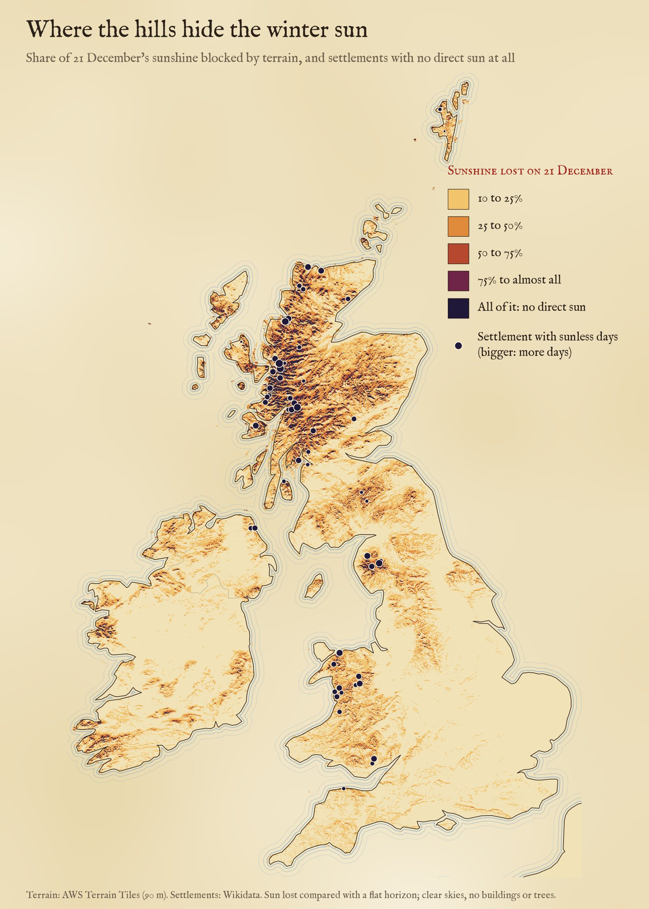
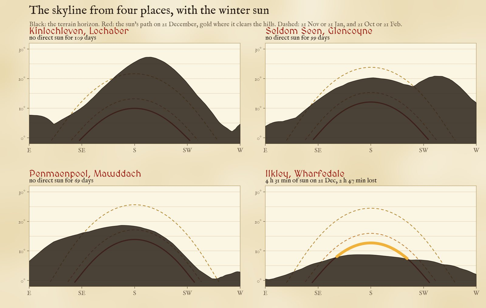
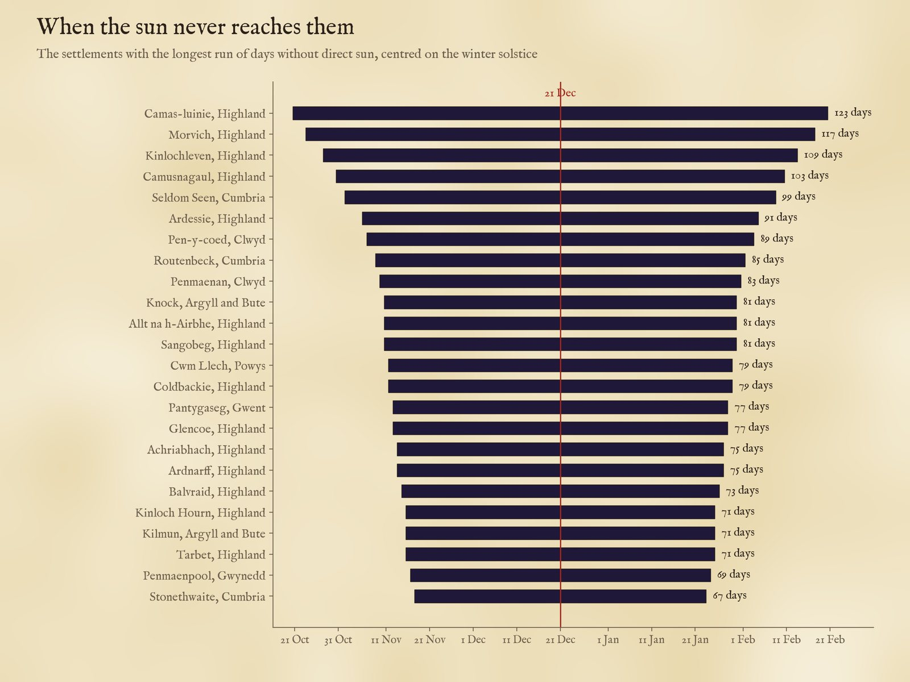
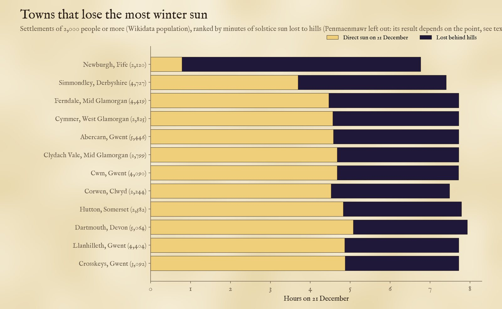
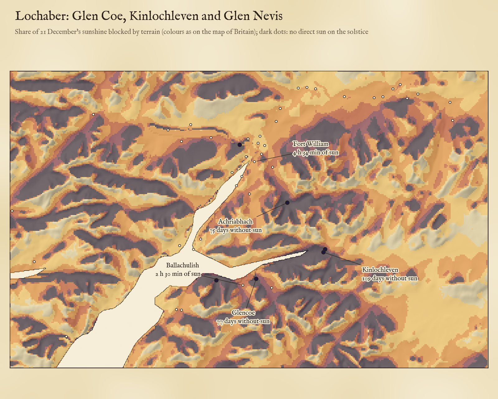
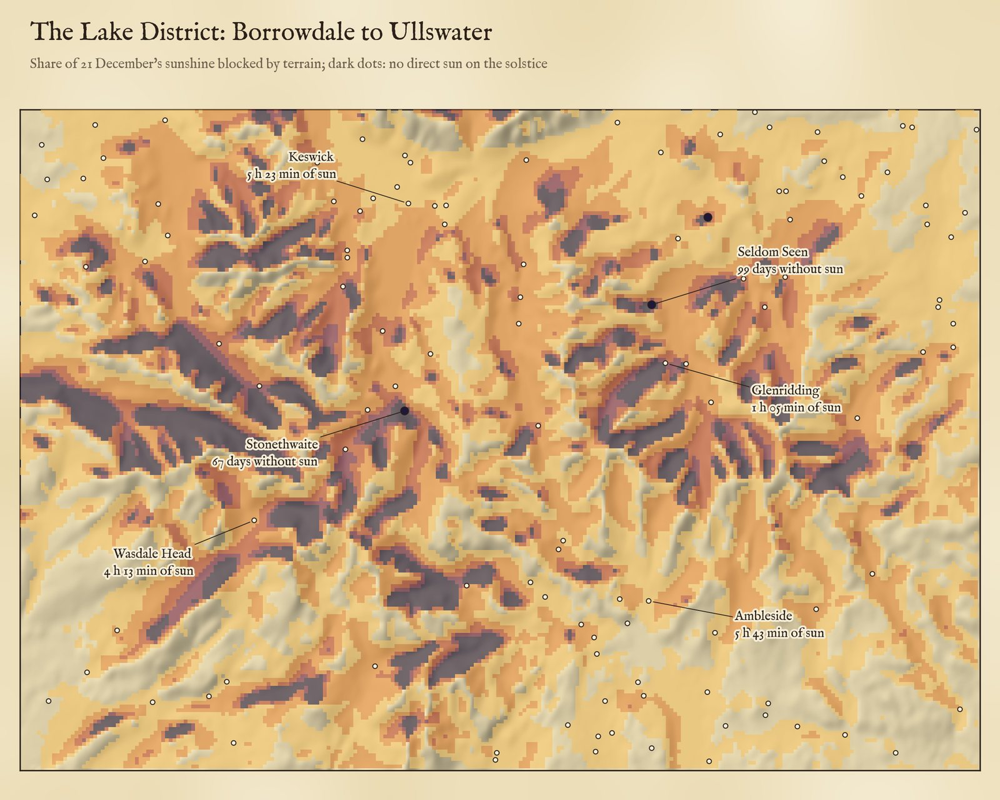

On the shortest day the sun at noon is only 10.6° up in the middle of Scotland, and hills block it. 64 settlements get no direct sun at all on 21 December. Tap a place to see its skyline and the sun's path.
Skyline from 90 m terrain, seen 2 m above the ground at the Wikidata point; no buildings, trees or cloud. Heights are stretched. Terrain: AWS Terrain Tiles.
In the middle of winter the sun hardly climbs. On 21 December it reaches only 16.6 degrees above the horizon at noon on the south coast of England, 10.6 degrees in the Central Belt and 6.6 degrees in Shetland, and it rises far round to the south east and sets in the south west. A hill that would cast a short shadow in June can hide it all day. So I worked out, for every 175 m square of Britain and Ireland and every one of 36,692 towns, villages and hamlets in the United Kingdom, where the land itself blocks the low winter sun, and for how long.
The map above is shaded by the share of the solstice's sunshine that hills take away. Tap any settlement to see its skyline drawn against the sun's path, and use the chips to switch to the hours of direct sun or to the number of days with none at all.
With a flat horizon the shortest day lasts from 5 h 28 min in the far north (Valsgarth) to 8 h 01 min in the Isles of Scilly (Old Town, St Mary's). Hills cut into that. The median settlement loses 18 minutes, which is mostly the first and last light lost behind low ground. 5,031 settlements (14%) lose at least an hour, and 331 lose half their sunshine or more.
The losses follow the mountains. The median settlement in Scotland loses 41 minutes and the median in Wales 41, against 14 in England and 23 in Northern Ireland. Of the 64 settlements that get no direct sun at all on 21 December, 41 are in Scotland, 15 in Wales, 6 in England and 2 in Northern Ireland.

Share of the sunshine on 21 December that terrain blocks, against a flat horizon. Dots: settlements with no direct sun on the solstice, larger for longer runs of sunless days.
Where a valley runs east to west under a steep southern wall, the sun can stay behind the mountain for weeks either side of the solstice. Measured from the Wikidata point for each place, the longest runs are:
Kinlochleven, at the head of Loch Leven under the slopes of Garbh Bheinn, is the largest: a village of about 810 people (by Wikidata) where, on this computation, the sun stays behind the skyline for 109 days, from about 28 October to 13 February. To its south the horizon stands 25.6 degrees high, while the noon sun on the solstice reaches only 9.9. In the Lake District the hamlet of Seldom Seen in Glencoyne, beside Glenridding above Ullswater, lives up to its name: 99 days. In Borrowdale, Stonethwaite goes 67 days.

The skyline from four places with the solstice sun (red, gold where it clears the hills) and the paths a month and two months either side (dashed).

The run of days with no direct sun, for the settlements with the longest runs.
Most sunless places are hamlets. One town nearly joins them: Penmaenmawr on the North Wales coast, 4,353 people (Wikidata), under steep hills east of the headland it is named after: from its Wikidata point, west of the centre, the sun stays behind the hills all day on the solstice, but from the town's OpenStreetMap point half a kilometre east it shows for 1 h 39 min. Part of the town is in shadow, not all of it, so it is not counted. Among the 4,589 settlements of 2,000 people or more, 46 lose two hours or more. The South Wales valleys fill the list: Ferndale in the Rhondda Fach keeps 4 h 28 min of a 7 h 43 min day. Of towns over 10,000 people, Ilkley loses the most: 2 h 47 min on the solstice, with Ilkley Moor to its south.

Towns of 2,000 or more people losing the most solstice sun. Population from Wikidata.

Lochaber: the share of solstice sunshine blocked, on 175 m squares, over hill shading from the same terrain.

The central Lake District, shaded the same way.
Away from settlements, 4,956 km² of the United Kingdom gets no direct sun on 21 December, 4,450 km² of it in Scotland. Most of it is steep north-facing hillside: where a slope facing north is steeper than the sun is high, the ground shades itself. 2,451 km² goes at least two months without it. In Ireland, where I have terrain but no gazetteer, the figure is 464 km², 78% of it in Kerry, Mayo, Donegal and Galway. In all, hills take half or more of the solstice sunshine from 4.6% of UK land.
Terrain. I joined the zoom-10 Terrarium tiles of the open AWS Terrain Tiles over Britain and Ireland into one height grid (about 90 m cells, mostly from the SRTM survey), removed a handful of obvious spikes and pits, and kept land cells inside the Natural Earth outlines.
Horizons. For each settlement I traced rays outwards every degree of compass bearing from 60 to 300 degrees, out to 30 km, from a point 2 m above the ground at its Wikidata coordinates, and took the steepest angle to the terrain, allowing for the Earth's curvature and normal atmospheric refraction. For the map I did the same for 9,716,368 land squares of about 175 m, every 2 degrees out to 20 km.
The sun. For each day from the solstice back to the equinox I worked out the sun's height at every bearing from the latitude and the declination, with refraction, and counted the sun as shining when the centre of its disc stands above both the skyline and the flat horizon. The days after the solstice mirror those before it to within a fraction of a degree, so a run of sunless days is counted symmetrically about 21 December.
What this cannot say. The terrain is about 90 m across and smooths sharp ridges, gorges and cliffs, and it has no buildings or trees, which matter a great deal in towns and woods. A Wikidata point marks one spot, often a church or the old centre; a village spread up a hillside may have sunny houses above a sunless core, or the reverse. I have ignored cloud, which in the west Highlands hides the winter sun on most days anyway, and refraction near the horizon varies with the weather. Settlement coverage is Wikidata's: 36,692 places in the UK, uneven between regions. I rechecked the 84 sunless Wikidata points with separate code (raw terrain, the NOAA solar position minute by minute): 83 came out sunless again. Moved to the OpenStreetMap point for the same place, 20 of the 58 that could be matched get some sun; I have left those 20 out, so the count is 64. On the map they are coloured by sun lost, not as sunless, and their panel says so. Treat single places as estimates to be checked on the ground; the pattern across the country is robust.